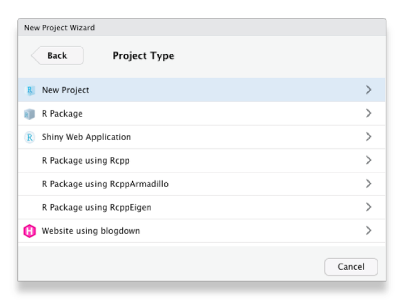
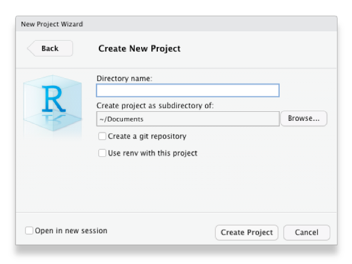

Get started with crime mapping by learning about why putting crime on maps is useful, and get a tour of the RStudio software we will use throughout this course.
1.1 Welcome
Welcome to Learn Crime Mapping with R. This book will help you learn about using maps and spatial analysis techniques to understand crime. Watch this video to learn more.
1.2 Why put crimes on maps?
This course is about how we can use maps and other spatial analysis tools to help understand, prevent and respond to crime. Watch this video to understand why spatial analysis is a useful tool for understanding crime.
Concentration of crime
Why is it important to map crime?
What does the law of crime concentration state?
According to research on the concentration of crime, how much crime typically happens in the 5–8% of streets or addresses with the most crime?
Why do researchers often prefer to focus on micro places, such as streets and addresses, rather than neighbourhoods?
Which of the following findings is consistent with the law of crime concentration?
Why is crime concentrated in space? Watch this video to find out more about how our environment influences opportunities for crime and how that causes clusters of different crimes.
Routine activities
Why are opportunities for crime concentrated in some places more than others?
According to the routine activities approach, which of the following is not required for a crime opportunity to occur?
What role do controllers play in preventing crime, according to the routine activities approach?
Why do different types of crime concentrate in different places?
What is a target in the context of the routine activities approach?
We will use RStudio for almost all of this course. Watch this video to find your way around the different panels in the RStudio window.
1.4.1 Slightly adjusting how RStudio works
Before we start using RStudio, we should make a few changes to how it is set up that will make it easier to fix any mistakes we make while coding. To do this, click on the Tools menu in RStudio and then on Global Options…. In the dialogue box that opens, click on General in the left-hand panel if General is not selected already.
In the “Workspace” section of the right-hand panel, find an option that says “Restore .RData into workspace at startup” and make sure the check box to the left of that option is not checked. On the next line down, click the drop-down menu labelled “Save workspace to .RData on exit:” and choose the option Never.
Now click on Code in the left-hand panel. Find the box that is marked “Use native pipe operator, |> (requires R 4.1+)” and make sure it is checked.
Click Apply and then OK to close the dialogue box.
The RStudio IDE Cheat Sheet highlights some of the features available in RStudio and gives a list of available keyboard short-cuts.
RStudio includes a feature called Projects, which make it much easier to manage all the files that you will need to use as part of many data-analysis projects. We will learn more about projects later on, but for now it’s enough to create a single project in which you can store all the code you write while working through this book.
To create a new project from within RStudio, click File then New Project … and choose to create the project in a new directory on your computer:
Choose to create a new (empty) project, rather than use any of the templates for specific types of projects:

Choose what the new project directory should be called (probably ‘Crime Mapping’), and where on your computer it should be created, then click Create Project:

That’s it – you have created an RStudio project that you can organise your work in.
1.5 In summary
Now that you know why crime mapping is useful for understanding crime, why crime is typically concentrated in space and how to find your way around RStudio, in the next chapter we will produce our first crime map in R.
If you’re not feeling too confident at this point in the course, don’t worry – learning something new is always a bit of a roller coaster and there is lots of help available in subsequent chapters.
# Getting started {#sec-getting-started}::: {.abstract}Get started with crime mapping by learning about why putting crime on maps is useful, and get a tour of the RStudio software we will use throughout this course.:::## WelcomeWelcome to _Learn Crime Mapping with R_. This book will help you learn about using maps and spatial analysis techniques to understand crime. Watch this video to learn more.{{< video https://youtu.be/zT78IBRsIBk >}}## Why put crimes on maps?This course is about how we can use maps and other spatial analysis tools to help understand, prevent and respond to crime. Watch this video to understand why spatial analysis is a useful tool for understanding crime.{{< video https://youtu.be/-FQwFQ8e-O0 >}}::: {.callout-quiz .callout}#### Concentration of crime```{r}#| echo: falsewhy_maps_quiz1 <-c("To estimate the total number of crimes in a city",answer ="To understand where different types of crime happen most often","To predict the weather in crime-prone areas","To determine the average time crimes occur")why_maps_quiz2 <-c("Most crime is caused by a large number of offenders","About half of all crime happens in half of a city’s neighborhoods",answer ="Most crime occurs in a small minority of places","Crime is approximately equally distributed across all streets in a city")why_maps_quiz3 <-c("25%", answer ="50%", "75%", "100%")why_maps_quiz4 <-c(answer ="Most crime in a high-crime neighborhood occurs at only a few streets or addresses","Crime is usually random at the neighborhood level","Analyzing neighborhoods is harder","It is easier to access data on crime at particular addresses than for neighbourhoods")why_maps_quiz5 <-c("Crimes in Medellin are evenly distributed across the city","No specific places in Kaduna experience concentrated burglary rates","Crime in Oslo is spread equally across the city",answer ="About half of crimes in Seattle occur on 5% of streets")```**Why is it important to map crime?**`r webexercises::longmcq(why_maps_quiz1)`**What does the law of crime concentration state?**`r webexercises::longmcq(why_maps_quiz2)`**According to research on the concentration of crime, how much crime typically happens in the 5–8% of streets or addresses with the most crime?**`r webexercises::longmcq(why_maps_quiz3)`**Why do researchers often prefer to focus on micro places, such as streets and addresses, rather than neighbourhoods?**`r webexercises::longmcq(why_maps_quiz4)`**Which of the following findings is consistent with the law of crime concentration?**`r webexercises::longmcq(why_maps_quiz5)`:::::: {.box .reading}Weisburd, D. (2015). [The law of crime concentration and the criminology of place](https://doi.org/10.1111/1745-9125.12070). *Criminology*, 53(2), 133-157.Johnson, S. (2010). [A brief history of the analysis of crime concentration](https://doi.org/10.1017/S0956792510000082). *European Journal of Applied Mathematics*, 21(4-5), 349.Farrell, G. (2015). [Crime concentration theory](https://doi.org/10.1057/cpcs.2015.17). *Crime Prevention and Community Safety*, 17(4), 233-248.:::## Why is crime concentrated in space?Why is crime concentrated in space? Watch this video to find out more about how our environment influences opportunities for crime and how that causes clusters of different crimes.{{< video https://youtu.be/SvfPGslMrcs >}}::: {.callout-quiz .callout}#### Routine activities```{r why-concentrated-quiz}#| echo: falsewhy_concentrated_quiz1 <- c( "Crime happens randomly in all places", answer = "Some places have more environmental features that facilitate specific crimes", "Police allocate more resources to high-crime areas", "Criminals prefer remote locations to commit crimes")why_concentrated_quiz2 <- c( "A motivated offender", "A suitable target", answer = "A controller who prevents the crime", "A place where the offender and target can meet")why_concentrated_quiz3 <- c( answer = "They reduce the likelihood of opportunities for crime occurring, e.g. by making targets or places less vulnerable", "They deter crimes by arresting offenders", "They create opportunities for offenders and targets to meet", "They plan environments to increase crime rates")why_concentrated_quiz4 <- c( "Criminals always prefer urban areas for all types of crime", "Police enforcement varies between locations", "Opportunities for crime are spread evenly across all areas", answer = "Opportunities for crime are influenced by specific environmental features that vary by crime type")why_concentrated_quiz5 <- c( "A location where offenders and controllers meet", answer = "The person or object that an offender aims to harm, steal, or engage with", "A police operation to reduce crime in specific areas", "Any place where crime does not occur")```**Why are opportunities for crime concentrated in some places more than others?**`r webexercises::longmcq(why_concentrated_quiz1)`**According to the routine activities approach, which of the following is _not_ required for a crime opportunity to occur?**`r webexercises::longmcq(why_concentrated_quiz2)`**What role do controllers play in preventing crime, according to the routine activities approach?**`r webexercises::longmcq(why_concentrated_quiz3)`**Why do different types of crime concentrate in different places?**`r webexercises::longmcq(why_concentrated_quiz4)`**What is a target in the context of the routine activities approach?**`r webexercises::longmcq(why_concentrated_quiz5)`:::::: {.box .reading}Santos, R. B. (2015). [Routine Activity Theory: A Cornerstone of Police Crime Analyst Work](https://ebookcentral.proquest.com/lib/ucl/reader.action?docID=1952969&ppg=130). In _The Criminal Act: _Cohen, L. E., and Felson, M. (1979). [Social Change and Crime Rate Trends: A Routine Activity Approach](https://doi.org/10.2307/2094589). *American Sociological Review*, 44(4), 588–608.:::## Finding your way around RStudioWe will use RStudio for almost all of this course. Watch this video to find your way around the different panels in the RStudio window.{{< video https://youtu.be/QhmPrfleCx4 >}}### Slightly adjusting how RStudio works {#sec-adjust-rstudio}Before we start using RStudio, we should make a few changes to how it is set up that will make it easier to fix any mistakes we make while coding. To do this, click on the `Tools` menu in RStudio and then on `Global Options…`. In the dialogue box that opens, click on `General` in the left-hand panel if `General` is not selected already.<p class="centered-image"><img src="../images/workspace_options.png" alt="A screen shot of the RStudio Global Options dialogue box, showing which options should be selected."></p>In the "Workspace" section of the right-hand panel, find an option that says "Restore .RData into workspace at startup" and make sure the check box to the left of that option is **not checked**. On the next line down, click the drop-down menu labelled "Save workspace to .RData on exit:" and choose the option **Never**. Now click on `Code` in the left-hand panel. Find the box that is marked "Use native pipe operator, |> (requires R 4.1+)" and make sure it is **checked**.Click `Apply` and then `OK` to close the dialogue box.::: {.box .reading}The [RStudio IDE Cheat Sheet](https://github.com/rstudio/cheatsheets/blob/master/rstudio-ide.pdf) highlights some of the features available in RStudio and gives a list of available keyboard short-cuts.[Writing Code in RStudio](https://rstudio.com/resources/webinars/programming-part-1-writing-code-in-rstudio/) is a webinar that talks you through RStudio in more detail.:::### Creating an RStudio project {#sec-create-project}RStudio includes a feature called Projects, which make it much easier to manage all the files that you will need to use as part of many data-analysis projects. We will learn more about projects later on, but for now it's enough to create a single project in which you can store all the code you write while working through this book.To create a new project from within RStudio, click `File` then `New Project …`and choose to create the project in a new directory on your computer:<p class="full-width-image"><img src="../images/new_project_1.png" alt="Screenshot of an RStudio window for choosing between opening a new project in a new directory, in an existing directory or based on a project from a version-control system"></p>Choose to create a new (empty) project, rather than use any of the templates for specific types of projects:<p class="full-width-image"><img src="../images/new_project_2.png" alt="Screenshot of an RStudio window for choosing from different types of RStudio project"></p>Choose what the new project <abbr title="directories on your computer are also sometimes called folders"> directory</abbr> should be called (probably 'Crime Mapping'), and where on your computer it should be created, then click `Create Project`:<p class="full-width-image"><img src="../images/new_project_3.png" alt="Screenshot of an RStudio window for choosing the directory that should be used for a new project"></p>That's it -- you have created an RStudio project that you can organise your work in.<!--## Navigating this bookThis book includes chunks of R code that you can run in RStudio. The tutorials that make up this course include short chunks of R code that you can run directly in this window. To run the code in each chunk, just click the `Run Code` button in the top-right corner of each chunk. If you want to re-run a chunk of code, you can click the `Start Over` button in the top-left corner of each chunk. Some of the chunks will have pre-filled code for you to run, whilefor others you will be asked to type the code needed to complete a task based onwhat you have already learned.When you click `Run Code`, the output of the chunk will appear below it (theremay be a delay of a few seconds for more-complicated chunks).To try out using a code chunk, click `Run Code` below – you should see themessage 'Hello, world!' printed below the box.```{r exercise0, exercise=TRUE}message("Hello, world!")```::: {.box .notewell}Some of the tutorials include boxes like this one that contain information thatit is particularly important for you to know to avoid common mistakes in writingcode. Pay special attention to these points and remember to ask questions ifanything isn't clear.:::<div class="box extra-detail"><h5 id="intro-box1-title" class="box-title">More information you might like to know <- **click here**</h5><div id="intro-box1" class="box-content">In these tutorials you will also see lines marked 'Extra detail' that you canclick on to find out more information about a particular issue. This is generally information that you do not need to know to complete the tutorial, butwhich might be useful in other circumstances or which might answer some questions that you have. You can skip these boxes if you want to, or come backto them later if you have a question.</div></div><script>$("#intro-box1-title").click(function () { $("#intro-box1").toggle("slow") })</script>-->## In summaryNow that you know why crime mapping is useful for understanding crime, why crime is typically concentrated in space and how to find your way around RStudio, in the next chapter we will produce our first crime map in R.If you're not feeling too confident at this point in the course, don't worry – learning something new is always a bit of a roller coaster and there is lots of help available in subsequent chapters.<p class="full-width-image"><img src="../images/r_rollercoaster.png" alt="Cartoon line chart showing how you become more confident in using R over time, then less confident and then more confident again."></p><p class="credits"><a href="https://twitter.com/allison_horst">Artwork by @allison_horst</a></p>